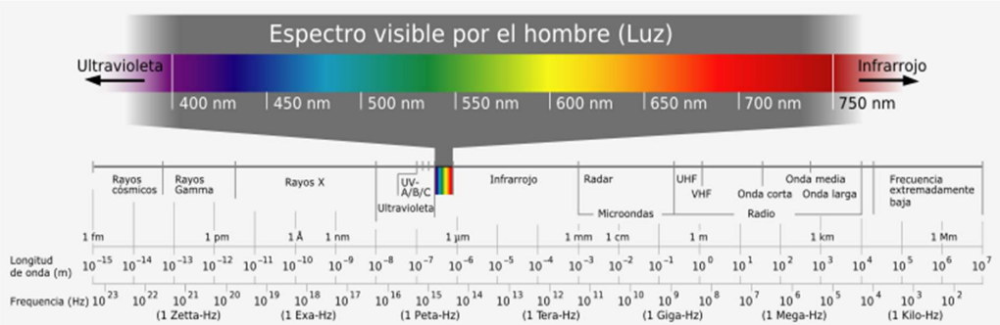
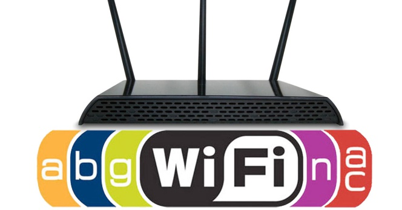
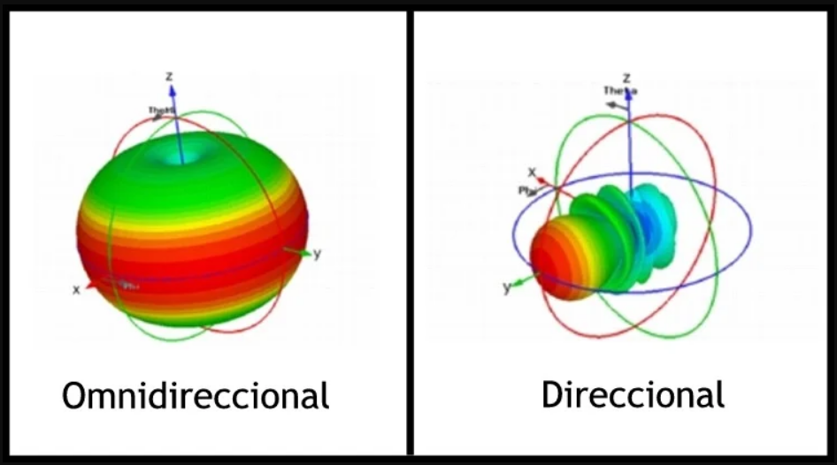

Autenticación
𝗣𝗮𝗿𝘁𝗲 𝟭
𝗦𝗲ñ𝗮𝗹𝗲𝘀 𝗲𝗹𝗲𝗰𝘁𝗿𝗼𝗺𝗮𝗴𝗻é𝘁𝗶𝗰𝗮𝘀 son ondas que llevan información. 𝗘𝗹 𝗲𝘀𝗽𝗲𝗰𝘁𝗿𝗼 𝗲𝗹𝗲𝗰𝘁𝗿𝗼𝗺𝗮𝗴𝗻é𝘁𝗶𝗰𝗼 es un conjunto de las tipologías de radiación electromagnética.  𝗘𝗹 𝗲𝘀𝗽𝗲𝗰𝘁𝗿𝗼 𝗿𝗮𝗱𝗶𝗼𝗲𝗹é𝗰𝘁𝗿𝗶𝗰𝗼 son todas las comunicaciones inalámbricas que oscilan entre los 300 Hz y 300 GHz. 𝗟𝗮𝘀 𝗯𝗮𝗻𝗱𝗮𝘀 𝗜𝗦𝗠 son un conjunto de bandas para usos industriales, científicos y médicos. 𝗣𝗼𝘁𝗲𝗻𝗰𝗶𝗮 𝗱𝗲 𝗲𝗺𝗶𝘀𝗶ó𝗻 es la intensidad con la que transmite una antena. 𝗔𝘁𝗲𝗻𝘂𝗮𝗰𝗶ó𝗻 𝘆 𝗱𝗶𝘀𝗽𝗲𝗿𝘀𝗶ó𝗻 ambas disminuyen la intensidad de la señal. La dispersión es cuando las ondas no se propagan en la misma dirección.
𝗣𝗮𝗿𝘁𝗲 𝟮
𝗜𝗻𝘁𝗲𝗿𝗳𝗲𝗿𝗲𝗻𝗰𝗶𝗮𝘀 𝘆 𝗿𝘂𝗶𝗱𝗼 son perturbaciones que afectan la señal. 𝗥𝗦𝗦𝗜 indica con qué potencia recibe la señal. 𝗦𝗡𝗥 indica la diferencia entre la potencia de la señal y la de ruido. 𝗟𝗮 𝗠𝗼𝗱𝘂𝗹𝗮𝗰𝗶ó𝗻 permite transmitir información a través de las bandas del espectro radioeléctrico mediante la modificación de las ondas. 𝗙𝗛𝗦𝗦 divide la portadora en bandas menores. 𝗗𝗦𝗦𝗦 se transmite como una secuencia de bits con capacidad de corrección negociada con anterioridad entre los extremos de la comunicación. 𝗢𝗙𝗗𝗠 divide la portadora en bandas solapadas y transmite a través de ellas.
𝗣𝗮𝗿𝘁𝗲 𝟯
𝗠𝗜𝗠𝗢 se utiliza muchas antenas para la emisión y la recepción de la señal. 𝗟𝗮 𝘃𝗲𝗹𝗼𝗰𝗶𝗱𝗮𝗱 de transmisión determina la velocidad y la robustez de la transmisión. 𝗖𝗮𝗻𝗮𝗹𝗲𝘀 rango de frecuencia que utiliza una red WiFi.  𝗟𝗮𝘀 𝗮𝗻𝘁𝗲𝗻𝗮𝘀 son las que convierten la señal electromagnética y viceversa.
𝗣𝗮𝗿𝘁𝗲 𝟰
𝗗𝗶𝗿𝗲𝗰𝗰𝗶𝗼𝗻𝗮𝗹𝗶𝗱𝗮𝗱 es el modo de radiar de la antena. 𝗜𝘀𝗼𝘁𝗿ó𝗽𝗶𝗰𝗮𝘀 todas las direcciones del espacio. 𝗢𝗺𝗻𝗶𝗱𝗶𝗿𝗲𝗰𝗰𝗶𝗼𝗻𝗮𝗹𝗲𝘀 todas las direcciones en un plano del espacio. 𝗗𝗶𝗿𝗲𝗰𝗰𝗶𝗼𝗻𝗮𝗹𝗲𝘀 con mayor intensidad al espacio. 𝗨𝗻𝗶𝗱𝗶𝗿𝗲𝗰𝗰𝗶𝗼𝗻𝗮𝗹𝗲𝘀 solo en uno de los sentidos de la dirección de emisión. 𝗕𝗶𝗱𝗶𝗿𝗲𝗰𝗰𝗶𝗼𝗻𝗮𝗹𝗲𝘀 en los dos sentidos de la dirección de emisión. 𝗦𝗲𝗰𝘁𝗼𝗿𝗶𝗮𝗹𝗲𝘀 transmite en una región concreta del espacio.  𝗚𝗮𝗻𝗮𝗻𝗰𝗶𝗮 es el incremento de la potencia de una antena. 𝗗𝗶𝘀𝘁𝗿𝗶𝗯𝘂𝗰𝗶ó𝗻 de potencia en el plano X-Y es un parámetro para comparar las antenas. 𝗘𝗳𝗶𝗰𝗶𝗲𝗻𝗰𝗶𝗮 𝗱𝗲 𝗹𝗮 𝗮𝗻𝘁𝗲𝗻𝗮 es la medida de la potencia radiada por la antena respecto a la potencia eléctrica suministrada.